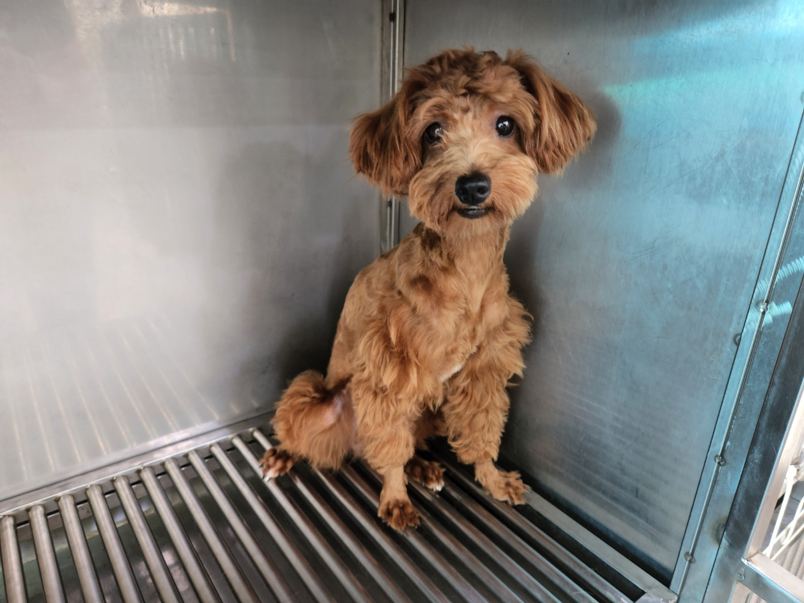
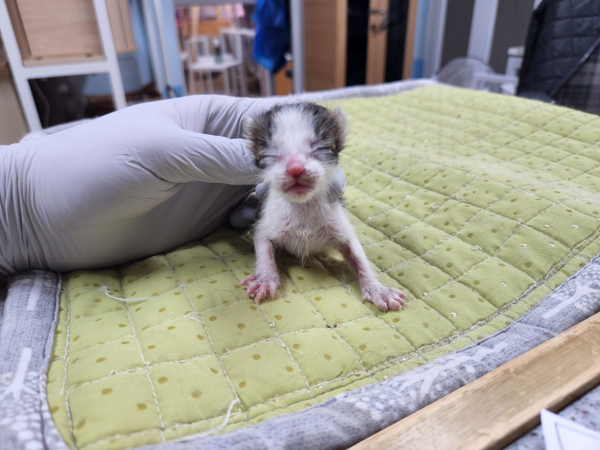
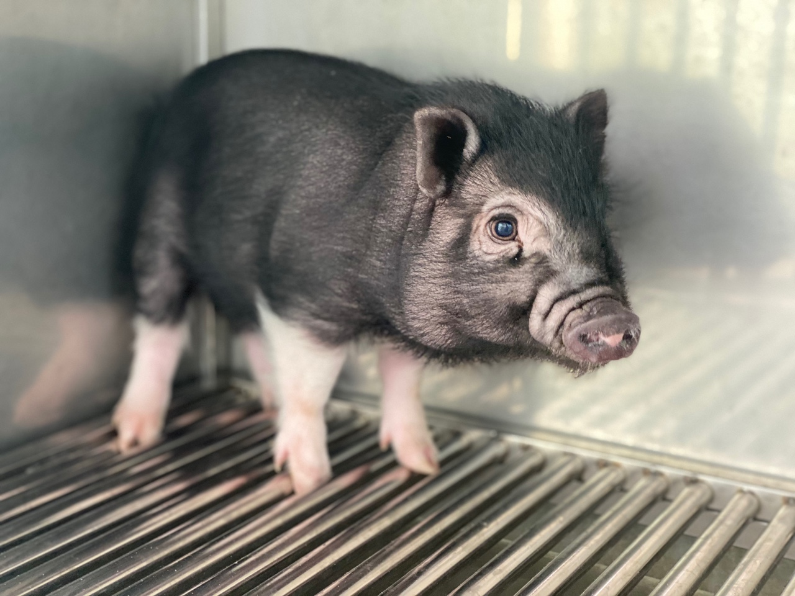

보호동물
대전광역시 동물보호센서의 새식구를 소개합니다.
더보기
-

- 관리번호 : 22-2-256
- 품종 : 믹스
- 발견장소 :선화서로23번길 45주변
-

- 관리번호 :15-5-487
- 품종 : 흰검
- 발견장소 : 갈마 사거리 주변
-

- 관리번호 :41-4-457
- 품종 : 검흰
- 발견장소 : 대전역 주변
-

- 관리번호 :74-854
- 품종 : 돼지
- 발견장소 :무진화로 주변
공지사항더보기
- 대전동물보호센터 입양 유기견 문제
- 대전동물보호센터 휴관일 안내
- 유기견입양예정자 사전교육
- 2022년 유기동물 입양비 지원안내
입양후기더보기
- 토요일 입양된 푸들
- 입양한지 5개월된 깜돌이
- 5-4입양 우리집 막둥이
- 네네 입양후기
 대전동물보호센터
대전동물보호센터